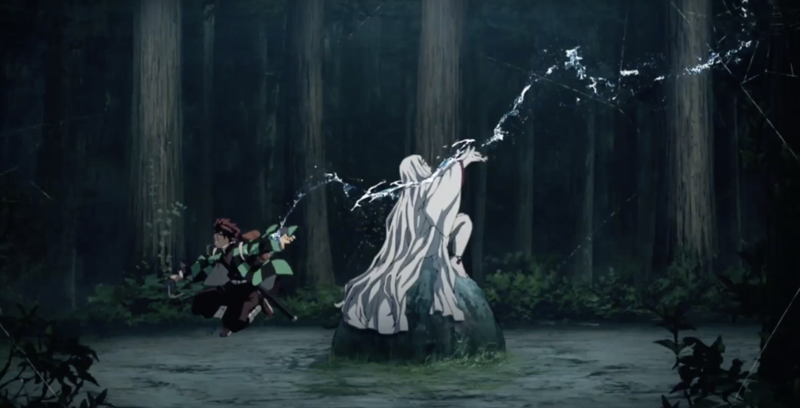
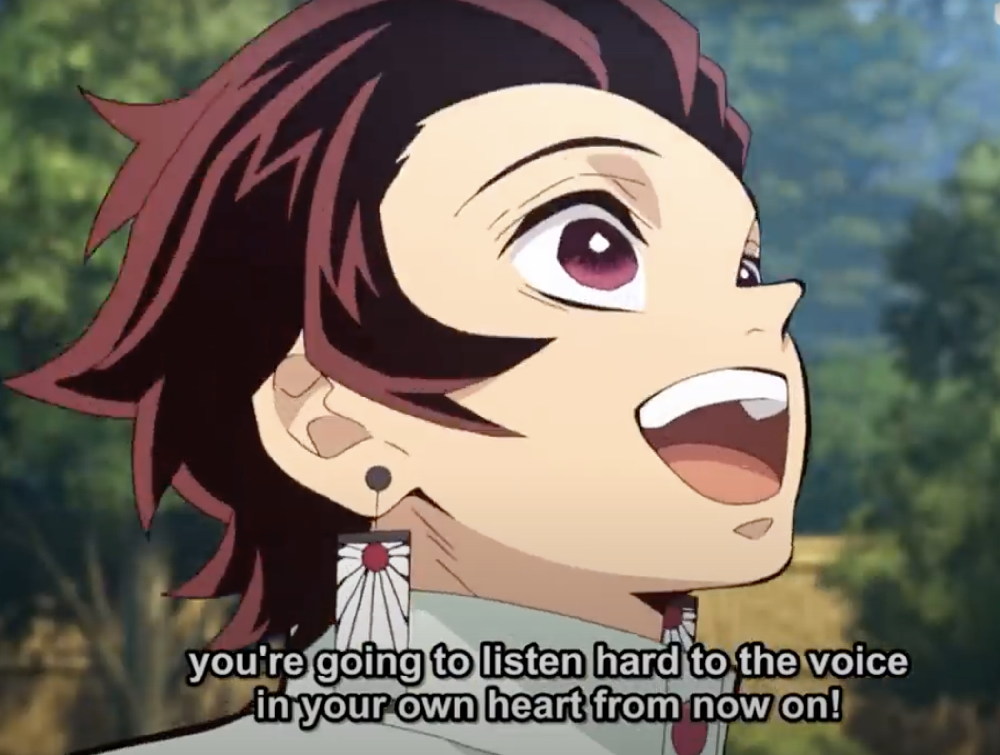

Messages from Demon Slayer: Kimetsu no Yaiba
Or the Value of Listening to the Voice in Your Heart

Tanjiro Kamado, The Inspiring Stoic Hero
Demon Slayer: Kimetsu no Yaiba had many messages that resonated with me. At the top of the list is the story of the Stoic hero that takes responsibility for his life and meets challenges with grace. Tanjiro Kamado has tragedy and death forced on him by events that were beyond his control. Muzan killed his whole family except for his sister, who was turned into a demon. It was clear that he was horrified and angry when he saw what happened to his family. But instead of becoming bitter, he accepts and channels his emotions into positive action. He nurtures his drive to prevent the same tragedy from affecting anyone else by training to become a demon slayer himself. He takes responsibility for the things that happened to him, even though it was not his fault.
However, despite being motivated by a strong desire to prevent demons from killing people, Tanjiro never loses sight of his own humanity. This shows in most of his interactions with the other characters in the story. Most people who meet him are left inspired and comforted. However, his brilliant personality shines through the most during his interactions with demons. He feels for the demons, who were often made against their own will by Muzan. At times, he feels respect for their skills - like during the fight with the drum-wielding, gravity-bending demon. And in their final moments, Tanjiro often chooses to comfort the demons he killed rather than look at them with anger or disgust. The most impactful moment for me was when he switched techniques mid-attack to lessen the pain for a demon who was just enslaved by Rui.

I think Tanjiro’s character resonated with me so much because he has many similarities to the ideal version of me in my head that I aspire to be. I have run away from the problems in my life many times, feeling overwhelmed or terrified. Most of the time, running away did not help. When reflecting on how I could have handled these situations better, I’ve often wished I could face life’s challenges with as much equanimity and optimism as Tanjiro does.
Seeing Tanjiro grow by repeatedly facing terrifying challenges that were sometimes a little beyond his ability was the best part of the show for me. He’s not afraid to ask for help when challenges are overwhelming, and he gives it his best shot every time. Towards the end of the first season, I found myself drawing strength from his character. Indeed, the challenges in Tanjiro’s story are carefully curated for plot reasons. However, I think that the real message in the story is that you can choose to take on the right challenges that will help you, sometimes with the help of a trusted mentor.
Listening to the Voice in My Heart
Another part of Tanjiro’s character that struck a chord with me was his enthusiastic recommendation to “listen to the voice in your heart .”

In my early twenties, I was heavily influenced by rationalist/skeptic literature. Convinced that emotions and feelings were irrational and sometimes unnecessary, I grew used to ignoring them. Instead, I would try to do the right thing as defined by rational analysis. This led to me making a lot of “right” but unsatisfying decisions. I’ve recently grown to realize that living my life in this way is deeply unfulfilling. These days, I think of my feelings as a sense - similar to touch or hearing - that tells me how to live a life that I will find enjoyable and fulfilling. The sense warns me when something I do doesn’t quite sit right with my internal values and makes me feel good when it fits. By stifling this sense, I realized that I was basically suppressing a core part of my personality. “Listening to the voice in my heart” is such a poetic way to express this idea. Indeed, once I started listening to my heart more, I found life so much more colorful and satisfying. I started enjoying social events more and finding more joy in getting to know people. Sometimes, I still think that I don’t listen to my heart’s voice as much as I should.
Special Mentions
Apart from the messaging, I also enjoyed the creative powers of the demons. The spacetime bending drum demon and the “arrow” demon was particularly inventive and well-executed. Zenitsu is an interesting character. Despite being annoying at times (most of the time?), I cannot deny being wowed by his first on-screen kill. Of course, Episode 19 is the star of the first season. The build-up was long and slightly tested my patience, but it was so worth it. It was probably the most satisfying on-screen anime fight scene that I’ve watched with a slow build and a spectacular, climactic finish.
Ashwin Narayan
PhD Student | Guitarist | Coffee Enthusiast
I am a PhD student at the National University of Singapore working with the Biorobotics research group